02 - Perceptron¶
Over the next few lectures we will study different methods of machine learning.
Perceptron Basic¶
A Perceptron is a type of artificial neural network or ANN. It computes the sum of its weighted inputs and passes the result to a hard-limit threshold function.
It was designed to represent a single neurone in the brain. No one can be sure what exactly a neurone does but this method has some nice properties anyway.
Perceptron Operation¶
A perceptron ACC accepts an input vector (list of numbers) of n size and their weights and also a bias number and calculates a linear combination of these inputs and outputs either a 1 or a -1.
First a weighted sum is created which is the sum of all the inputs ( ) multiplied by their weights (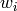) plus an additional bias weight (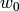):
) multiplied by their weights (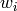) plus an additional bias weight (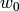):
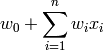
Then the weighted sum is passed through a threshold and ether is outputted as 1 or -1.
Perceptron Decision Surface¶
The decision surface is one which is understandable in the 1D, 2D and 3D space. It would be a point, line and plane respectively. Decision surfaces can still be represented in hyper feature space (more than 3 dimensions) and are called hyperplane decision surfaces.
The perceptron outputs a 1 (or fires an electron in the brains case) for instances which lie on one side of the hyperplane and a -1 (the neurone doesn’t fire in the brain) for instances lying on the other side.
For instances with 2 features we can represent the feature space in euclidian space (a graph commonly labeled with an x and y axis containing points or lines).
Ordinarily the hypothesis consists of a bunch of inputs () and a bunch of matching weights () including a weight known as a bias which never changes as the other weights do. The weights and inputs are summed up in the following way for a 2 dimensional feature vector:
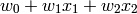
When we want to draw the decision surface (in this case it is not a hyperplane but a simple visualisable line) we say that the result should be equal to 0:
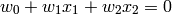
In order to represent this more closely to a euclidean line we might rearrange it thus:
Which is similar to the format 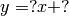 commonly seen in euclidian space.
If for example we were trying to guess the weights for a hypothesis which created a decision surface which looked like this:
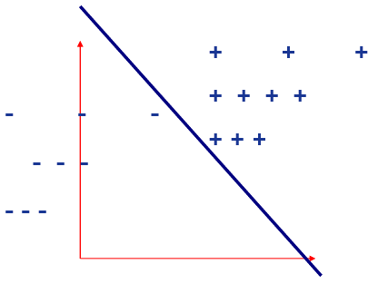Then assuming the line intercepts the vertical axis at lets say 1, and that the gradient is -1 (for every unit traveled in the positive direction right we travel one unit in the negative direction down thus 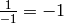) the equation would look like so:
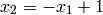
Thus by rearranging the equation in order make it equal to 0 agin we can determine the values of weights of the hypothesis:
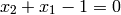
So we know that 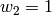, 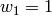 and 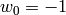, since 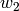 is the coefficient of 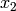, is the coefficient of 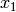 and is the constant.
So What Can we Represent?¶
We can represent many boolean functions if we assume a True result to return a 1 and a False result to return a -1. For example the boolean operator AND would look like so:
 |
||
|---|---|---|
| -1 | -1 | -1 |
| -1 | +1 | -1 |
| +1 | -1 | -1 |
| +1 | +1 | +1 |
...
Representation Power¶
...
Training Algorithms¶
Once the weight changing algorithm has been through each instance of the training data this is known as a single Epoch.
Theory and real life are very different things.
...